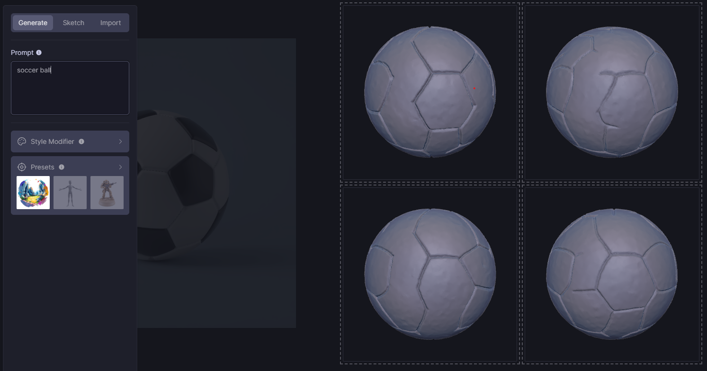

Hand-Typed Competitor Survey
Alpha3D
Link: https://www.alpha3d.io/
Notes:
- Detail and quality bad compared to Backflip
- Image-to-3d pipeline is class-specific (only trained on "shoes and furniture" right now)
Spline
Link: https://spline.design/
Notes:
- Seems to be more about manual modeling, real-time collaboration, and a large existing asset library.
- Generative feature is new, not emphasized, and behind paywall
3dfy
Link: https://3dfy.ai/
Notes:
- Class-specific models
- Website is flashy, but super slow to load and clunky to navigate
- Trains using synthetic 3D models (expensive to create)
- Automatically divides models into parts semantically (Backflip does not!)
Meshy
Link: https://meshy.ai/
Notes:
- see comparison below
Luma Labs - Genie
Link: https://lumalabs.ai/genie
Notes:
- Broad features passable, including occluded details
Comparing text-to-3d on Backflip vs Genie vs Meshy
Backflip's model seems convinced that the 2d sword model is rendered from a sideways perspective. Thus all 4 models generated have a 4-directional cross guard, which looks unnatural. One of them also has a point of density floating out in space.
Genie does pretty well, and has the highest degree of variation between its swords, plus textures. Not sure how they do that so fast.
Meshy is also passable on this easy prompt.

All three are pretty bad, perhaps Backflip is least bad. Genie (the pink one) looks different here because I clicked into one of the four models it created, my mistake.
Backflip really struggles with the occluded feature, i.e. the tail.
Genie does pretty well with geometry, though the quality is bad.
Asking Genie for a hi-res version gives this demented, filter-sharpened, stop-motion Pikachu from hell:
Meshy also does well, minus the demented wrinkly Pikachu.

After asking them to texture it, it looks quite good.
Conclusions
Does it look good from multiple views? I think Meshy wins here, they had the best geometry on "pikachu" and "sword"
Is the generation fast? All 3 are pretty fast, take under a minute. Perhaps Genie wins here because it has higher variation in the 3d models generated.